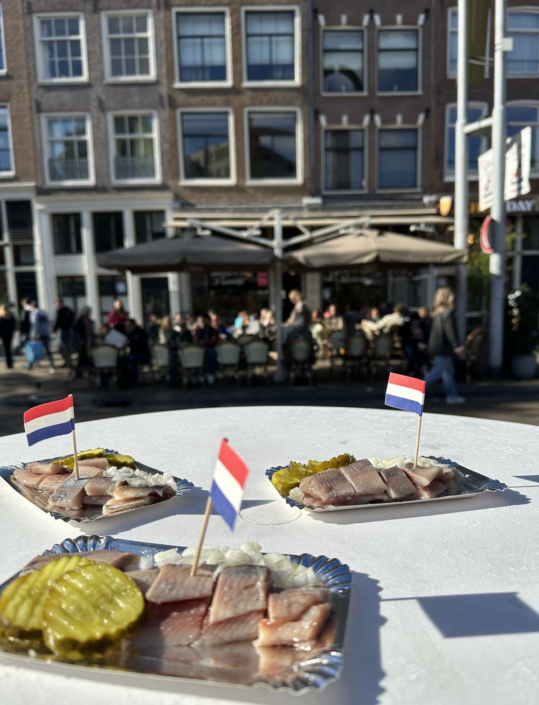
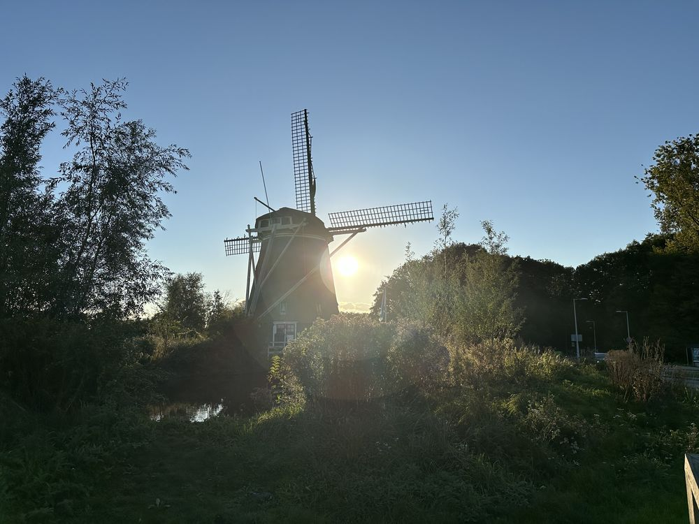

I have now, for the first time, had the privilege of visiting my grown-up son at his home, and needless to say, he's not in the same country as me. I never imagined being on this side of the expat life — the mum whose child lives away — because I was always that child.
Like most expat mums, it wasn't surprising when my first born wanted to go to university in a different country. I was fully expecting that and prepared for it — preparation being going into his room while he was a 12th grader and crying. I got lucky though: he went to university and had to return home a few months later, another Covid lockdown. I don't think he counted himself lucky having to study from home and basically missing out on his first year, but I felt like I had a bonus year.
When he did eventually go, it was a soft blow and I got to visit him regularly. He also came home often, and we had long summers together. It was like having a part-time child, and when he was home, he was so grateful to have everything done for him and was so lovely that it more than made up for the time apart.
I'm leaving too
Fast forward to his amazing degree result and he announces he's staying for a Masters. Again, I kind of expected it, and as he was staying at the same university, same house, same friends, I felt good about that. I went to see him lots and again there were plenty of holidays.
But then the Masters ended, and after a long summer at home with me, he upped and left — to his new job, in Amsterdam. So last weekend I went to visit him, see his new house and find out how life as a real functioning adult is working out for him.
Guess what? My expat, third culture, whatever label we'd like to give him, son is doing just fine. His home is clean and tidy, he can navigate the trains and metros in Amsterdam expertly, and he cooked for me. He is very much a grown up and I couldn't be prouder.

Visiting my son in his new home in Amsterdam. He cooked for me — and I couldn't be prouder.
But being on this side of the expat equation kind of sucks. Being the one in a country where the family has some roots and seeing your offspring fly the nest feels empty in a way. Almost like I regret making him an expat — I'd like him to be living next door, not miles away.
I never considered how it felt on the other side. I knew I missed home, but I didn't know home missed me. Our absence is palpable in everything those who stay behind do and see. They miss us.
I understand now a lot of what my mum used to say, and still does — how she would see grandparents picking their grandkids up from school and tear up. I thought she was exaggerating. She wasn't. We miss out on so much, and it puts this lifestyle under the spotlight: why am I doing this?
This is why we do it
The answer is kind of simple: we're doing it because this is what we know. We're doing it because it is, in fact, infinitely more fulfilling than living next door and being in the same city or country forever.
The flip side of missing and being missed is the deep appreciation for the family members you never take for granted. The richness of the relationships I enjoy with my family is only possible because of the very real sense that we have relatively few meetings left in this lifetime and we need to enjoy them. I always get the best from my parents, my family, and even my son who is now in a different country. Family life is good, fun, and light.

Family life comes with memories of different countries, different foods, and the people we encountered along the way.
Not only that — family life comes with memories of different countries we all lived in, all the foods we enjoyed together, the different people we encountered, and looking back, it is simply so abundant. There is a price to pay for the choices we make, and on balance, I feel that the expat price is low considering all that is gained.
So no, I'm not moving to Amsterdam to be with my son just yet — or maybe ever. I'll make sure I have the best nonna's house right here in Florence for when my son decides to make his own babies and send them over to stay with me for the summer. They don't even exist, but I miss them already.
The feelings nobody prepares you for
What strikes me most about this experience is how unprepared I was for it emotionally. I've spent over 30 years as an expat. I've navigated the loss of identity that comes with starting over, the loneliness of being the invisible partner, the weight of building a life far from family. And yet this — watching my child repeat the pattern — caught me completely off guard.
It's a particular kind of grief that expat parents don't talk about enough. You raised your children to be brave, adaptable, curious about the world. You gave them exactly the tools they needed to leave. And when they do, you feel the full weight of what your own parents have been carrying all along.
If you're an expat parent watching your children grow up and move on — or if you're the one who left and you're starting to understand what that meant for the people you left behind — these feelings are worth exploring. They're complex, layered, and deeply human. You don't have to carry them alone.